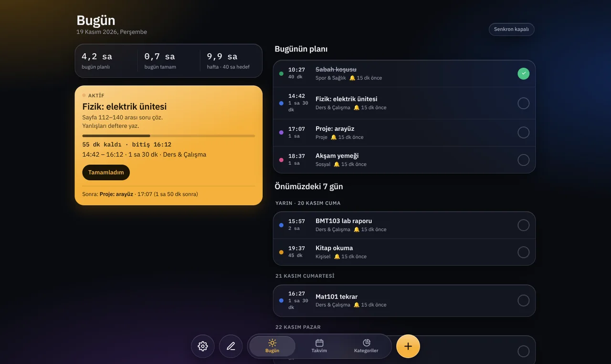

My Calendar App
My personal calendar app: I split my time into event types, give each a weekly goal, compare what I planned with what I actually did, and see which event I am in right now. The same code runs as a web app installed on the iPhone home screen and as a Linux desktop app; once signed in, both devices show the same data.
Screenshots


How it works
src/)Project summary
I sort events into types such as study, projects and sport & health, and give each type a weekly hour goal. The app shows how much I planned and completed that week, and when I add a new event it tells me how much time is left to reach that type's goal.
What it does
- Active card: the name, description, end time, time left and progress of the event happening now; when it ends, the card switches to the next event by itself.
- Today screen, monthly calendar and weekly time distribution by type.
- Pencil button: add, edit, delete and reorder event types.
- Live sync between phone and computer; changes made offline sync once the connection is back.
- Reminders: in-app alerts, system notifications, and exporting events with their alarms to the iPhone Calendar (.ics).
- On Linux: runs in the system tray, full screen (F11) and “Check for updates”, which compares the app code with the GitHub repository and updates it if they differ.
- Works offline, with backup and restore.
Technology
Development process
- It started as a single-file, phone-first web page: Today, Calendar and Categories tabs, an event form that slides up from the bottom, and weekly goals per type.
- It became a Linux desktop app (Electron, AppImage). Closing the window keeps it running in the system tray, so reminders still arrive.
- For the iPhone it became a web app (PWA) that installs on the home screen: notch spacing, an iOS icon and offline support with a service worker.
- Cloud sync with email/password sign-in was added using Firebase (Firestore). Every event and type is its own record; if two devices change different things both are kept. I explain how I built it in the research note.
- The desktop version got an update check: it compares its files with the repository's git fingerprints and downloads and verifies only the files that changed.
- The “Active” card and a settings gear were added; account, reminder and backup settings moved out of the Today screen.
- The interface was simplified from scratch: translucent glass panels over a soft colourful background, a floating navigation bar at the bottom, grouped lists, and two columns on wide screens. If “reduce transparency” is on, it switches to opaque surfaces.
- A pencil button for editing and reordering event types was added; the order syncs between devices too.
- The app was built together with Claude Code; the features, the decisions and the testing on the phone are mine.
- Next goal: notifications while the app is closed (Web Push).
Status
A working, usable version. On an iPhone, open the app in Safari and choose Share → “Add to Home Screen”. Without signing in, data stays only on that device; once you sign in it is stored in Google Firebase to sync between phone and computer, accessible only to your account. For now the iPhone does not let a closed web app send notifications on its own; for a guaranteed alarm, export the events to the iPhone Calendar.
See the source on GitHub →